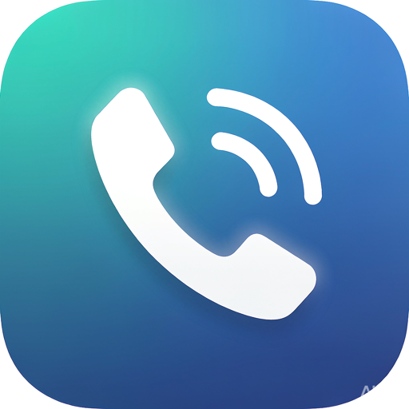
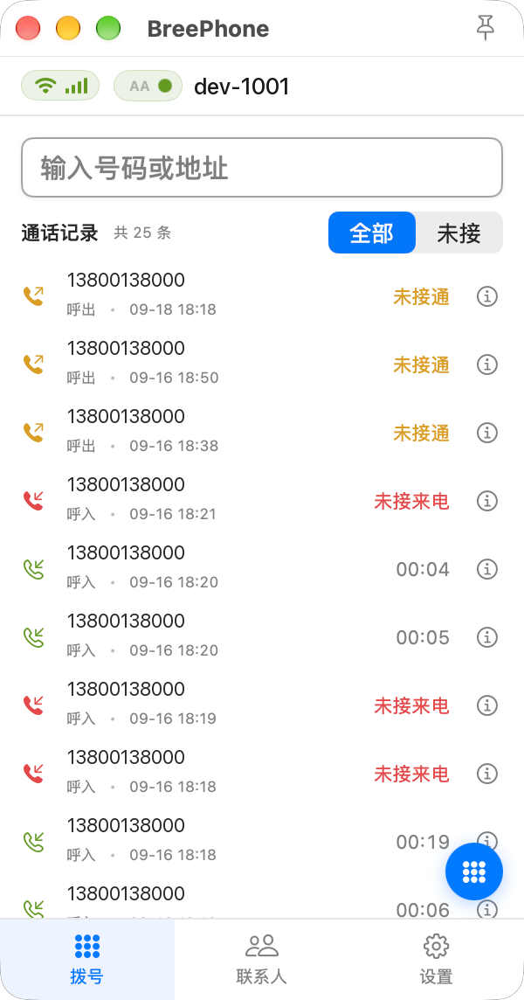
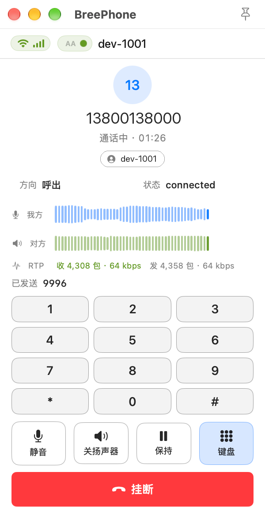
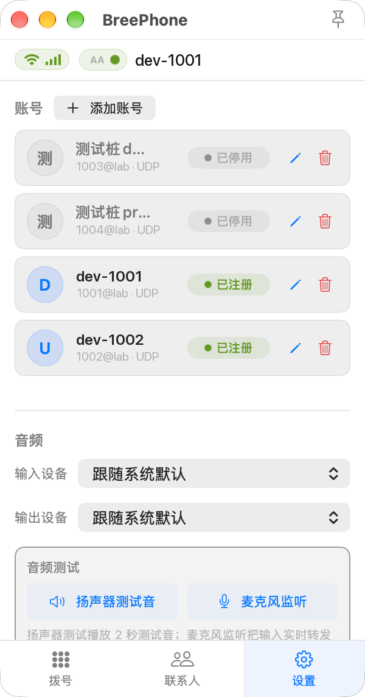
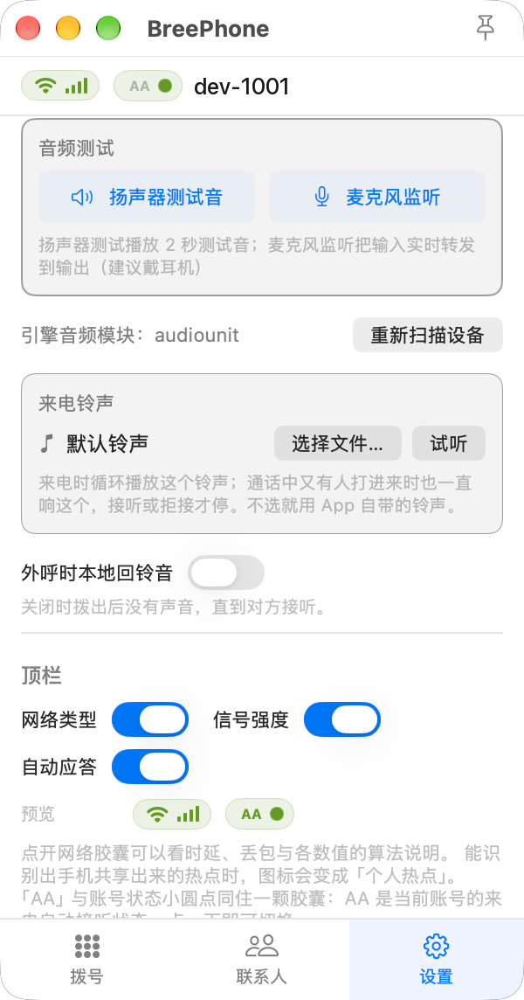
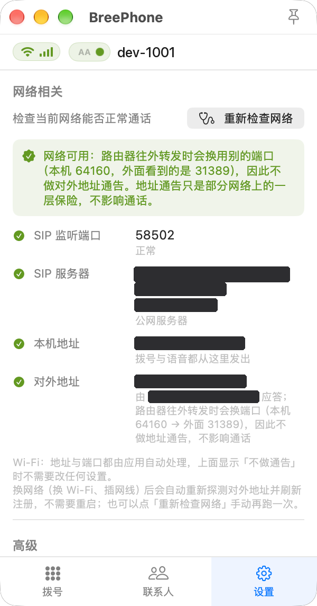
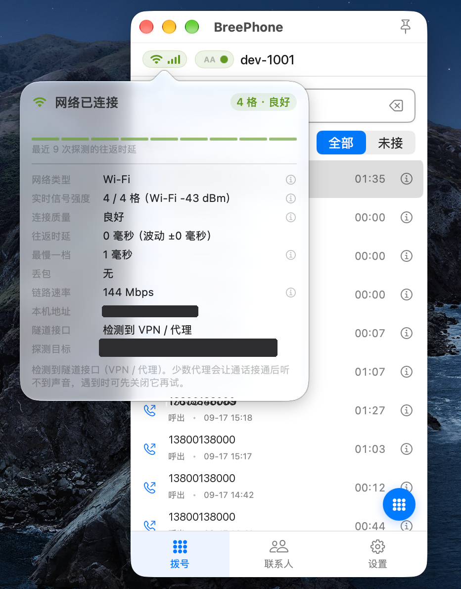
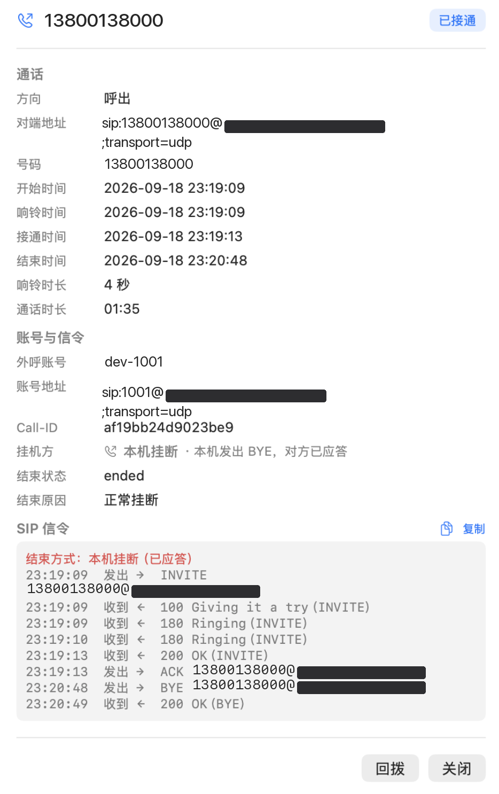

macOS 上的原生 SIP 软电话。不用额外装运行时，装完拖进「应用程序」就能打， 也没有常驻后台的进程占着内存。
窗口窄窄一条，不打电话的时候缩进菜单栏，不占地方。




SIP 软电话最容易卡在「打不通」和「通了没声音」上。与其让你去翻日志猜，不如把这些直接做进界面。
多个账号可以同时挂着，拖着排序，挨个启用停用。密码和 TURN 凭据存在 macOS 钥匙串里，不落数据库，也不进日志。
切换网络通话自适应不间断。换 Wi-Fi、插网线、开关 VPN 之后会自己重探对外地址再注册一遍，不用重启。注册没成功还会按递增间隔自己重试。
本机有没有正常监听、域名解析到了哪个公网地址、语音从哪张网卡出去、STUN 拿到的对外地址有没有被改端口。挨个查完，告诉你网络是否正常、能否支持正常通话。
每通电话都留下一份信令时序，按报文实际的收发方向归纳。是根本没发出去，还是对端没回，一眼分得清。
输入输出逐项挑，通话中改也立刻生效。旁边的 RTP 实时电平波纹能看出到底是麦克风没声、还是对方那边没声、还是对方语音流没发过来。
不打电话就缩进菜单栏，注册状态和通话时长一眼看到。窗口还能始终置顶，一直贴着屏幕边也不碍事。
账号、联系人、通话记录、设置全打成一个文件，换台机器导进去接着用。导入前会先给你看摘要（覆盖还是合并），确认了才动。
传输方式、注册间隔、STUN、TURN、ICE，连音频编码清单，都是按账号单独配的。
三个界面分别回答三件事：网络行不行、链路怎么样、是谁先挂的。
点一次「重新检查网络」，依次检查这四件事并把判断结果直接写出来：
自动探测通话相关网络是否可用，再以简要的形式描述出来，比如「路由器往外转发时会换用别的端口，因此不做对外地址通告」。

顶栏那颗胶囊常驻显示网络类型和信号强度。点开是一张详情卡：往返时延、波动、最慢一档、丢包、链路速率、出口网卡，还有是否检测到 VPN / 代理。
每一项旁边都有 ⓘ，点开是这一项的具体算法说明，不是一句「良好」就完了。
切换网络，通话不间断，并自动重新探测，始终显示当前最新网络情况。

每通电话都留一份信令时序，按报文实际收发方向归纳，再也不用单独抓包了：
100 就没了 → 对端或中间设备把 INVITE 吞了200 OK 但没有 ACK → 媒体地址多半有问题同一页还会写明是谁先挂的、结束状态和结束原因。回看一通失败的通话，几秒钟够了。

双击挂载后，把 BreePhone 拖进 Applications 文件夹，然后弹出磁盘映像。
在「应用程序」里右键（或按住 Control 单击）BreePhone，选「打开」，弹窗里再确认一次。就这一次。
为什么第 3 步要右键？ 本应用没有 Apple 开发者账号签名，也没做公证， 所以 Gatekeeper 会拦一下，提示「无法验证开发者」或「Apple 无法检查其是否包含恶意软件」。
如果提示的是「已损坏」，同样先用右键打开；仍然不行就去 「系统设置 → 隐私与安全性」，在页面下方找到被拦下的那一条，点「仍要打开」。
网上那些教你用 xattr -d com.apple.quarantine 的帖子不用管。右键打开是苹果自己
认可的正规路径，做一次就完事，没必要为了这个把 Gatekeeper 关掉。
先打开 设置 → 网络相关 → 重新检查网络，看那四行结论：
[RTP TX] 与 [RTP RX]：
本机发得出去、收不到包，说明对端的媒体根本没到你这儿，问题在中间链路上。「SIP 监听端口」如果不是 5060，不用在意——这是刻意设计的： 固定用 5060 时对端的媒体地址容易被中间设备改写，反而更容易没声音。
这类问题的根因是「套接字被钉死在启动那一刻的网卡上」。BreePhone 绑的是通配地址、 源地址交给内核按路由决定，所以开关 VPN 不会再导致注册失败。
如果仍然注册不上：换网络后应用会自动重试（约 2.5 分钟内按递增间隔重发 7 次）， 也可以到 设置 → 账号 里手动点一次重新注册。
按协商优先级排列：
| 编码 | 说明 |
|---|---|
opus/48000/2 | 48 kHz 全带，抗丢包最好 |
G722/16000/1 | 宽带 16 kHz |
PCMU | G.711 µ-law，兼容性最好 |
PCMA | G.711 A-law |
L16/44100/2L16/44100/1 | 未压缩线性 PCM，码率很高，只在对方只认它时才用得上 |
在账号设置里可以勾选与排序。不包含 G.729 / GSM / Speex / iLBC / AMR。
设置 → 数据 → 导出数据 会生成一个包含全部账号、联系人、通话记录与设置的 备份文件（默认包含账号密码，请妥善保管）。在新机器上装好 BreePhone， 用「导入数据」选中这个文件即可，导入前会先给你看一份摘要，导入模式可选整体覆盖或合并。
目前只有 Apple Silicon 版。Intel 版得把底层依赖整套重编一遍，暂时没有计划； 其它平台不在考虑范围内。
可以，应用注册了 bree:// 协议：
bree://call/1002 bree:1002 bree://hangup
| 内容 | 位置 |
|---|---|
| 账号、联系人、通话记录 | ~/Library/Application Support/BreePhone/breephone.sqlite |
| 日志 | ~/Library/Application Support/BreePhone/breephone.log |
| 账号密码、TURN 密码 | 系统「钥匙串访问」 |
日志只写本地文件，不写系统统一日志——里面会有通话号码、服务器地址与 SIP 报文，
落到 Console.app 那种谁都能翻的持久库里不合适。
不会。应用每次启动会向本仓库的 Releases 查询最新版本（GitHub 官方接口，匿名调用）， 发现新版本时弹窗提示并打开发布页，不会自己下载替换。 在没有签名与公证链路的前提下，让程序自动替换自己的可执行文件，风险远大于收益。